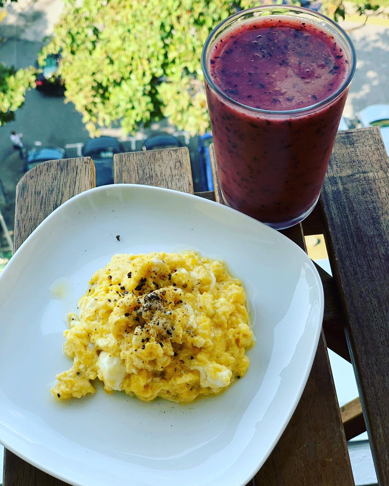
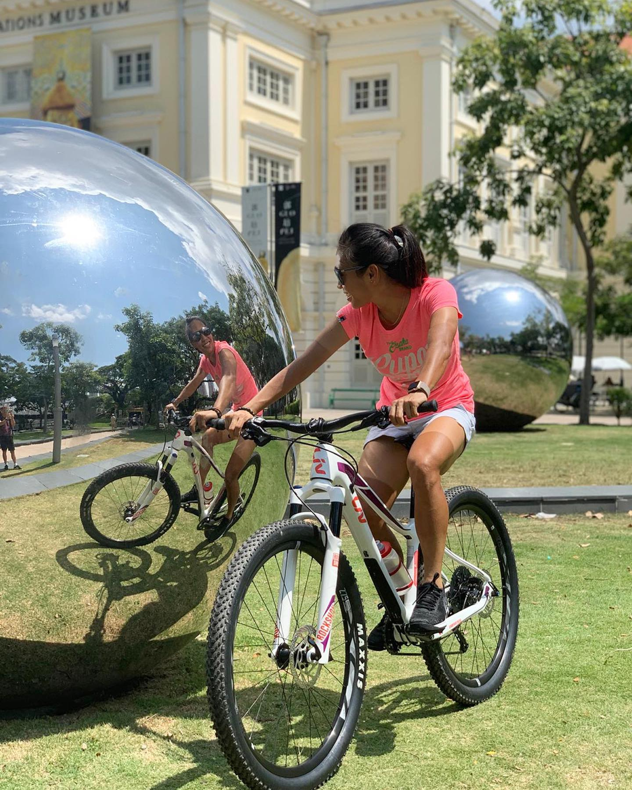
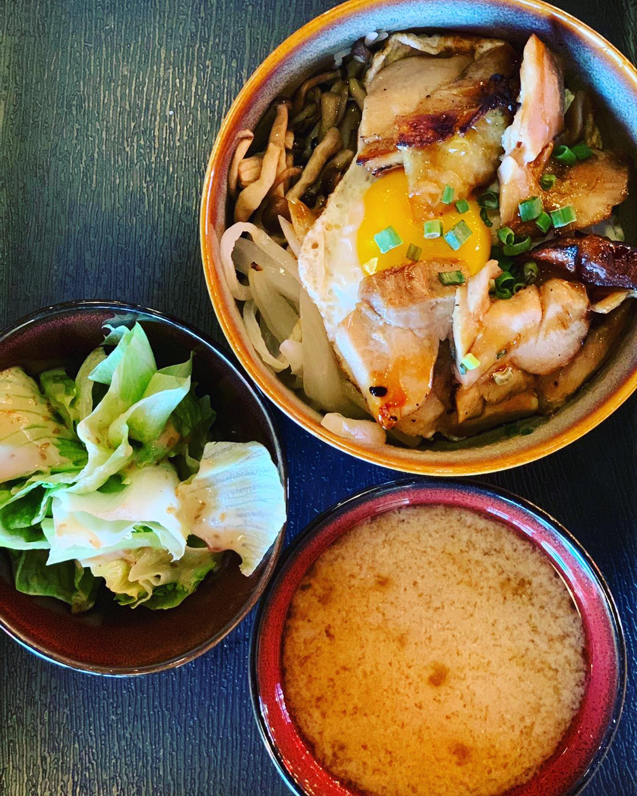
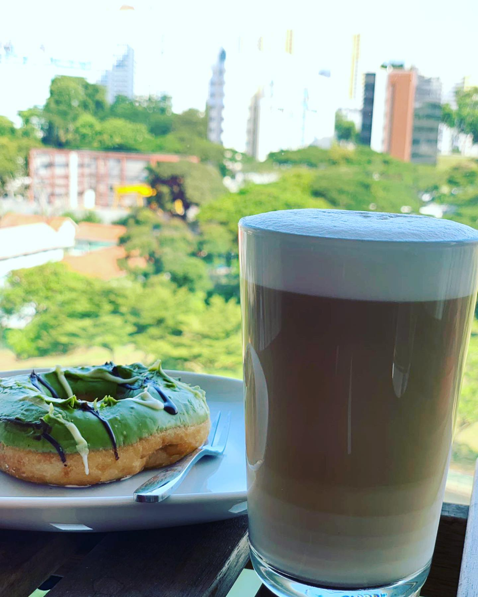
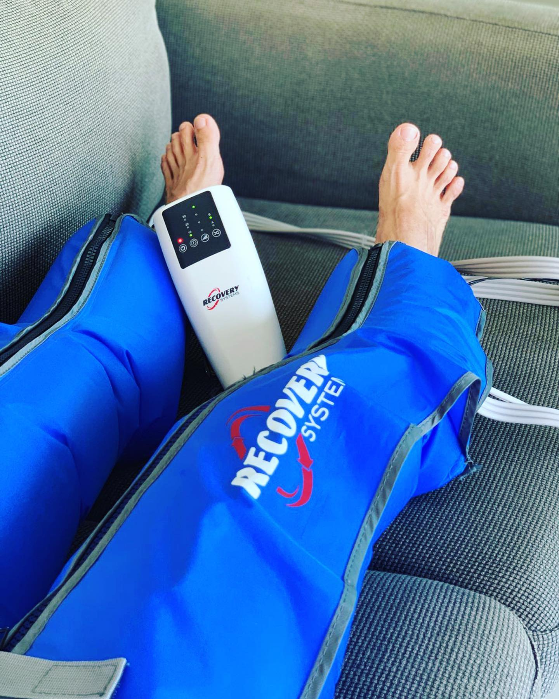
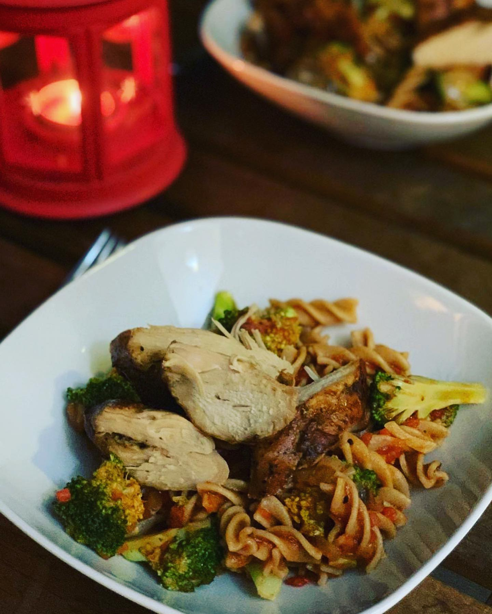

Hey hey! I’m @chelsie_tan and I’m finishing my #protakeover of @foodbuddy Instagram with this recovery post. Sunday is pretty much the only day without training for me so I do my best to recover after all my trainings🚴🏽♀️. My upcoming week is going to be tedious and brutal. It is the start of a strength building phase, consisting of 3 gym sessions a week for the next month😰💪🏼. With the increase of gym sessions, there isn’t any decrease of saddle time, most of the workouts remain the same, however there will be a slight increase in hours and intensity over the weekend. All make up to 23hours of training. ☝🏼My most essential “ritual” to aid quick recovery is the mini compression machine - the @recoverysystems. It gives me an extra psychological boost and physically reduces muscle stress so I am ready for the upcoming training sessions 😊. 😴 Sleep is extremely important for my recovery. I go to bed early, usually before 9pm. That would gives me a rough 7 hours of solid sleep (yes, you have to wake up very early to train in hot Singapore ☀️🌴🇸🇬). But on a rest day, I don’t set alarm, and sleep in a bit longer. 🥙 My food during recovery day is rich in carbs, protein, antioxidants and some sinful dessert to indulge myself 😋. Today for breakfast I had cheesy scrambled eggs 🍳 with fresh juice made of strawberries 🍓 blueberries, kiwi 🥝 , papaya and coconut water. For lunch I had chicken 🐓 teriyaki rice with mushroom 🍄, onions and egg 🥚. Accompanied with 2 sides - cabbage salad 🥗 and miso soup. And my dinner was quite simple: pasta with tomato 🍅 sauce, broccoli 🥦 and chicken breast🍗. My reward for productive training week was Super delicious doughnut 🍩 with coffee 😋. Lastly, to have some fun is a must have for my mental recovery 😄check out my stories 😜 Thanks for spending this weekend with me. I’m off to watch Tour de France 🇫🇷 and chill before crazy training tomorrow! Follow me & ask any questions on my page @chelsie_tan 😊 — #instagramtakeover #sgcycling #singaporecycling #singaporecyclingfederation #sgig #igsg #singaporefood #singaporefoodie #singapore #triathlon #mountainbiking #ironmantri #swimbikerun #girlsonbikes #seagames2019
2019-07-14 21:09:19
Back to main page